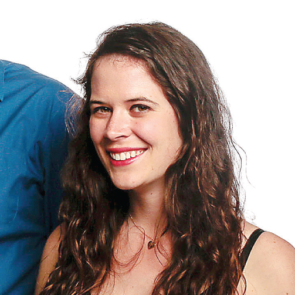

Fangirl the Magazine entertains independent young women and empowers them to come out of the shadows of their screens. From video games to fan fiction, Fangirl is the strongest voice for women in these traditionally male-dominated industries.
According to data from the Entertainment Software Association, women made up almost 50 percent of the gaming community in 2014. That number continues to grow, but their attempts to critique the industry are met with threats of violence or worse. This negative sentiment floods into similar areas of interest, such as fan fiction and comic books. Fangirl prides itself on being the strongest voice for women in these traditionally male-dominated industries. It provides a forum for women to break down barriers and build a community that supports their passions. Fangirl serves its readers by offering content that creates conversation, advocates their causes and empowers them to do what they love.
This is Caitlyn's bio. This is Caitlyn's bio. This is Caitlyn's bio. This is Caitlyn's bio. This is Caitlyn's bio. This is Caitlyn's bio. This is Caitlyn's bio. This is Caitlyn's bio. This is Caitlyn's bio. This is Caitlyn's bio.

This is Caitlyn's bio. This is Caitlyn's bio. This is Caitlyn's bio. This is Caitlyn's bio. This is Caitlyn's bio. This is Caitlyn's bio. This is Caitlyn's bio. This is Caitlyn's bio. This is Caitlyn's bio. This is Caitlyn's bio.
This is Allison's bio. This is Allison's bio. This is Allison's bio. This is Allison's bio. This is Allison's bio. This is Allison's bio. This is Allison's bio. This is Allison's bio. This is Allison's bio. This is Allison's bio.
This is Mollie's bio. This is Mollie's bio. This is Mollie's bio. This is Mollie's bio. This is Mollie's bio. This is Mollie's bio. This is Mollie's bio. This is Mollie's bio. This is Mollie's bio. This is Mollie's bio.
This is Sean's bio. This is Sean's bio. This is Sean's bio. This is Sean's bio. This is Sean's bio. This is Sean's bio. This is Sean's bio. This is Sean's bio. This is Sean's bio. This is Sean's bio. This is Sean's bio. This is Sean's bio.